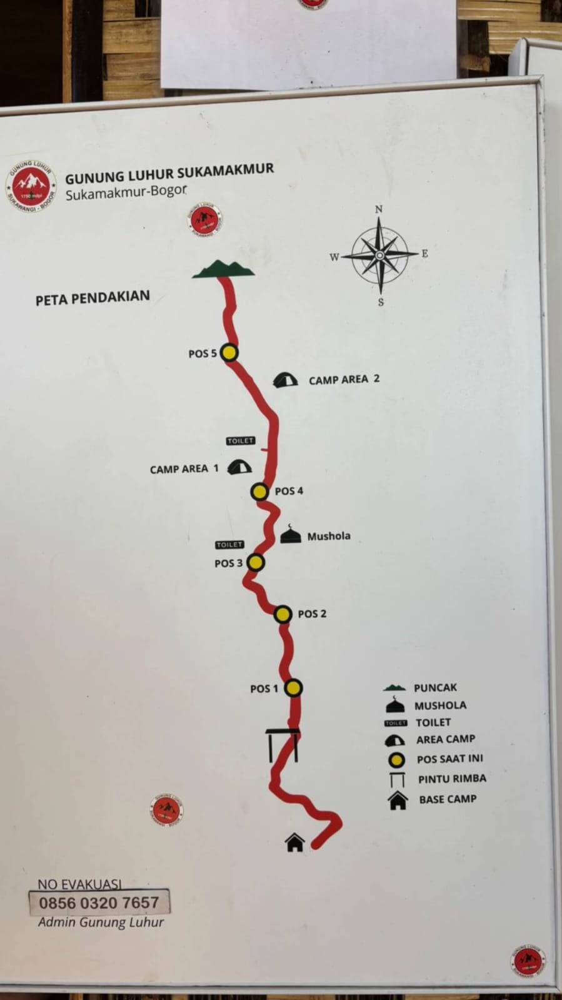
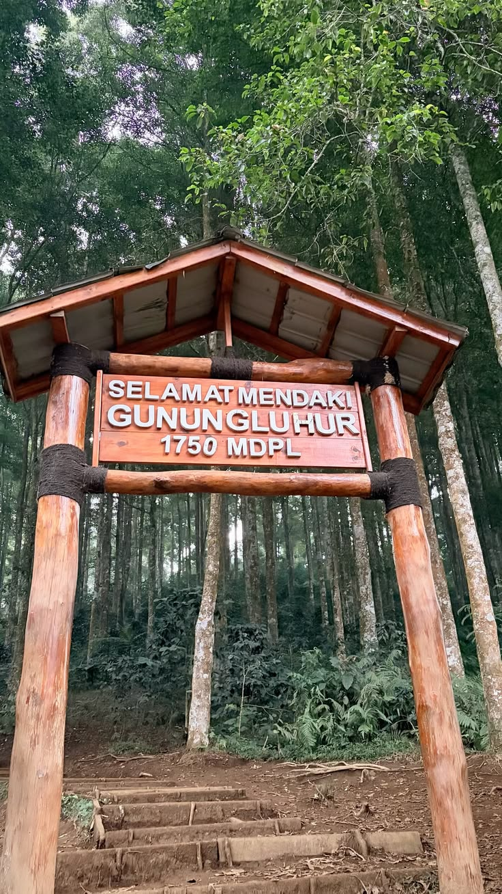
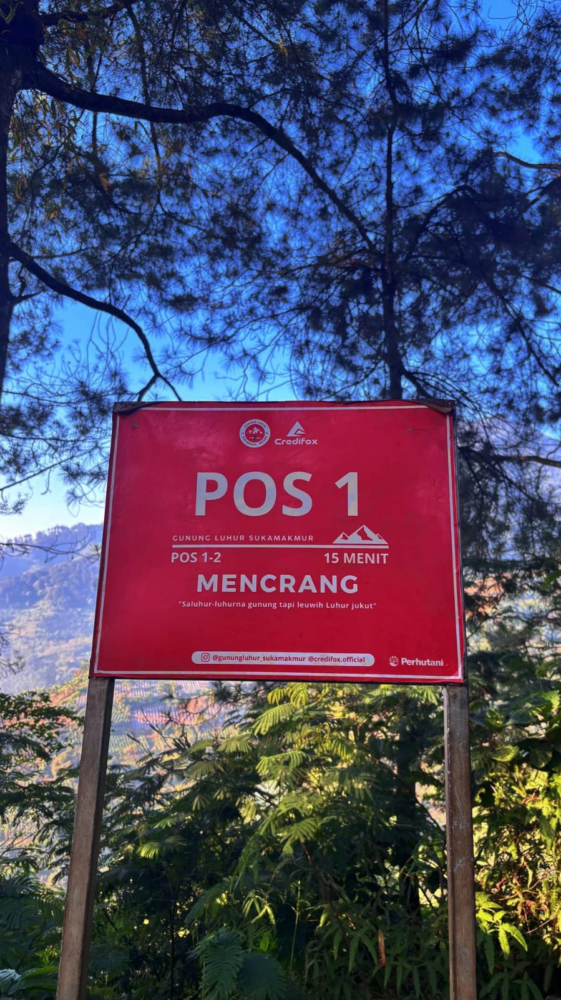
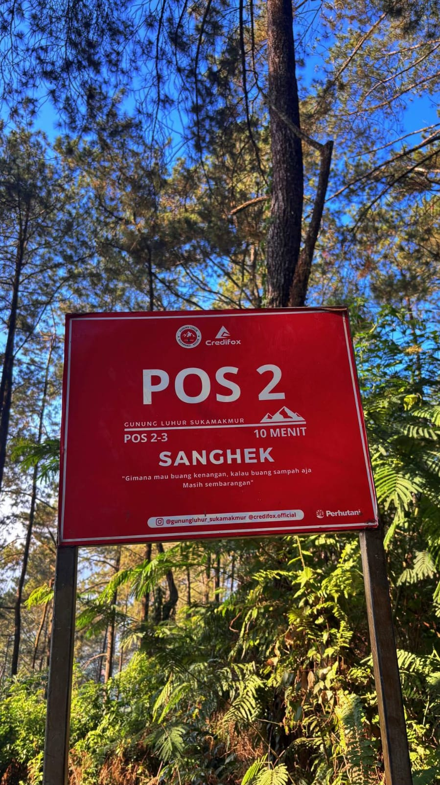
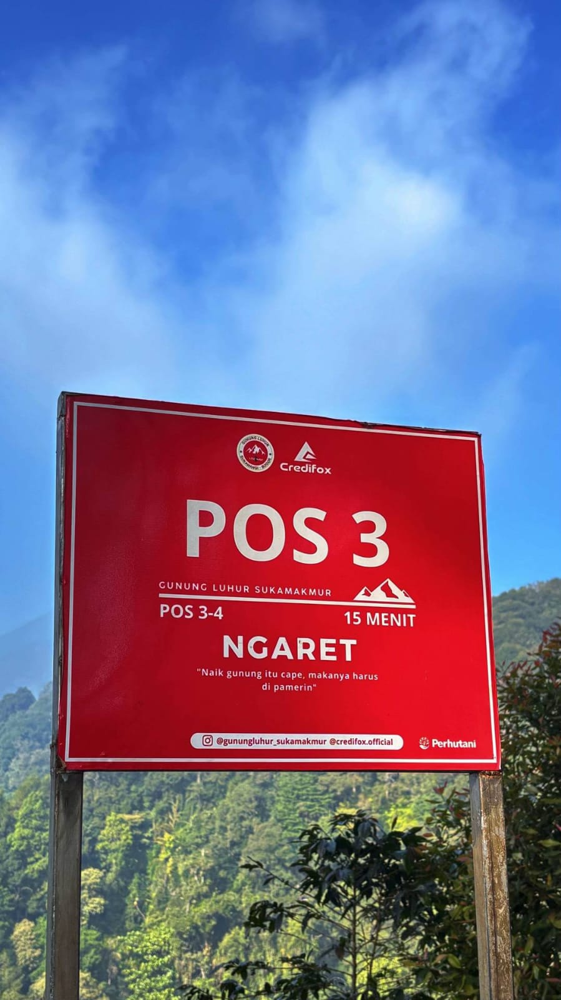
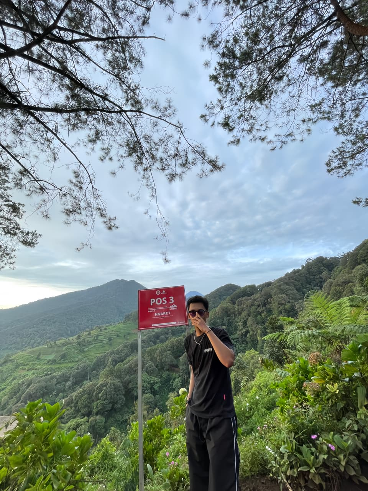
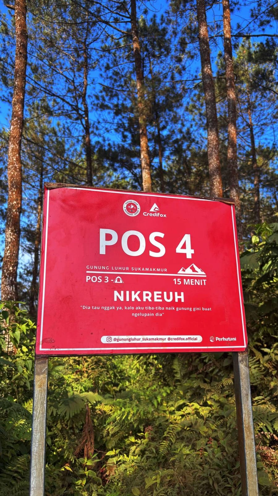
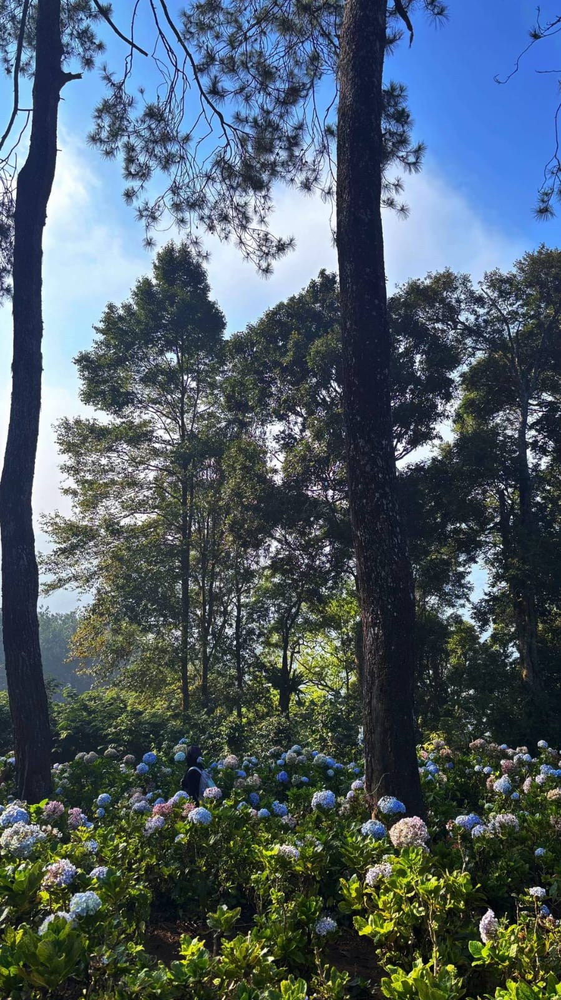
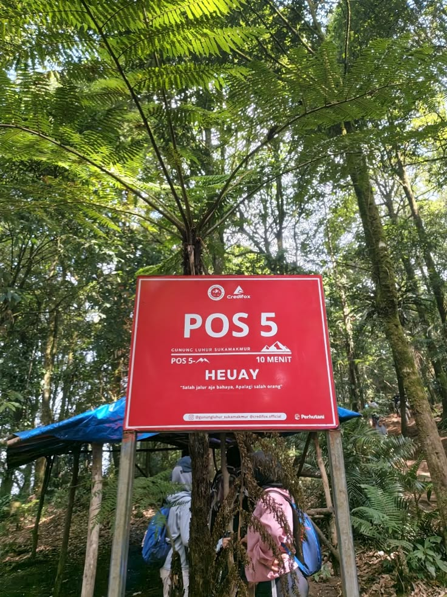

Peta Pendakian
Jalur Sukamakmur dimulai dari basecamp, melewati Pintu Rimba, lalu lima pos hingga Puncak Pancawangi di ketinggian sekitar 1.750 mdpl. Peta di bawah ini diambil dari papan informasi di basecamp.

Tabel Pos dan Estimasi Waktu
Estimasi waktu mengikuti angka yang tertera pada plang tiap pos dan dapat berbeda sesuai cuaca serta kondisi fisik pendaki.
| No | Nama Pos | Estimasi Waktu ke Titik Berikutnya | Titik Berikutnya |
|---|---|---|---|
| 1 | Basecamp | 15 menit | Pos 1 |
| 2 | Pos 1 (Mencrang) | 15 menit | Pos 2 |
| 3 | Pos 2 (Sanghek) | 10 menit | Pos 3 |
| 4 | Pos 3 (Ngaret) | 15 menit | Pos 4 |
| 5 | Pos 4 (Nikreuh) | 15 menit | Area camp |
| 6 | Area camp | 10 menit | Pos 5 |
| 7 | Pos 5 (Heuay) | 10 menit | Puncak |
| 8 | Puncak Pancawangi | - | Titik akhir |
Gambaran Jalur
Basecamp hingga Pos 1
Dari basecamp, pendaki melewati jalan tanah dan perkebunan warga menuju Pintu Rimba, gerbang resmi yang bertuliskan 1750 mdpl.

Pos 1 hingga Pos 3
Jalur berupa tanjakan tanah dengan pepohonan pinus yang teduh, dan licin saat basah.




Pos 4 hingga Pos 5
Pendaki melewati area camp dan kebun bunga hortensia sebelum tiba di Pos 5.



Pos 5 menuju puncak
Tanjakan terakhir dari Pos 5 menuju Puncak Pancawangi dengan panorama perbukitan Bogor.
Sumber Data
- Papan peta pendakian dan plang pos Gunung Luhur Sukamakmur (dokumentasi pribadi)
- Sukabumiupdate.com, "Gunung Luhur Sukamakmur, Pilihan Pendakian Singkat untuk Menikmati Panorama Bogor"
- KBE Online, "Cari Gunung yang Ramah Pemula? Gunung Luhur Sukamakmur"